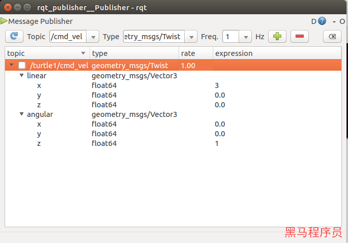

小乌龟介绍
小乌龟节点启动¶
1. 启动小乌龟模拟器节点¶
1 | |
2. 启动小乌龟键盘输入节点¶
1 | |
Warning
启动完成后，可以通过键盘输入操控小乌龟移动。
键盘操控时，光标一定要在命令行上。
小乌龟操控原理¶
1. 节点信息查看¶
小乌龟启动过程中，我们启动了两个可执行的程序：turtlesim_node和turtle_teleop_key 。可以通过命令查看当前的启动的节点：
Tip
可以查看到启动程序对应的节点/turtlesim和/teleop_turtle
查看小乌龟节点¶
通过命令可以查看/turtlesim节点的详情
1 | |
命令运行后，可以看到以下结果:
1 2 3 4 5 6 7 8 9 10 11 12 13 14 15 16 17 18 19 20 21 22 23 24 25 26 27 28 29 30 31 32 33 | |
Note
rosnode info命令可以查看当前节点的一些信息：
- Publications：此节点上定义的发布者
- Subscriptions：此节点上定义的订阅者
- Services：此节点上定义的服务
- 进程id，占用的网络端口
- Connections： 此节点和其他节点间的连接信息
查看控制节点¶
同理，我们也可以通过rosnode info查询/teleop_turtle节点的信息，
1 | |
1 2 3 4 5 6 7 8 9 10 11 12 13 14 15 16 17 18 19 20 21 22 23 24 | |
现在我们大致可以搞清楚一些通讯的关系：
/teleop_turtle节点存在一个发布者，往/turtle1/cmd_vel主题中发布数据。/turtlesim节点存在一个订阅者，去/turtle1/cmd_vel主题中获取数据。
2. 可视化工具查询节点关系¶
rqt_graph工具提供了可视化的工具方便我们查看这种节点间的关系：
1 | |
Note
图像显示，/teleop_turtle通过主题/turtle1/cmd_vel给/turtlesim进行数据传递。
/teleop_turtle为具备Publisher功能的节点。
/turtlesim为具备Subscriber功能的节点。
/turtle1/cmd_vel为publisher和subscriber通讯的主题。
调试工具操控小乌龟¶
1. rqt_publisher模拟数据发送¶
启动rqt_publisher工具
1 | |
通过图形化配置参数：

2. 通过命令行模拟数据发送¶
1 2 3 4 5 6 7 8 | |
小乌龟坐标系相关¶
面板¶
- 面板的坐标原点在左下脚，即左下角为(0,0)
- 面板的X轴是自左向右，数值是0开始正向增长
- 面板的Y轴是自下向上，数值是0开始正向增长
- 面板的宽度和高度相同，值为11.088899
小乌龟¶
- 小乌龟的坐标原点为小乌龟的中心点。
小乌龟移动指令参数¶
我们通过rostopic命令可以获得小乌龟的移动数据类型为geometry_msgs/Twist
1 | |
通过rosmsg命令可以查看数据的详细格式:
1 | |
输出的格式为:
1 2 3 4 5 6 7 8 | |
Tip
geometry_msgs/Vector3 linear指的是线速度，小乌龟只用到了float64 x，代表着乌龟向前进的线速度
geometry_msgs/Vector3 angular指的是角速度，小乌龟只用到了float64 z，代表着乌龟旋转的角速度